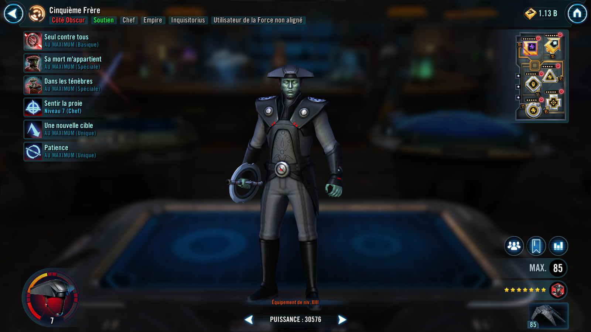
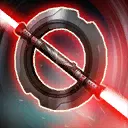
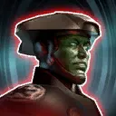

Fifth Brother
A powerful Inquisitor that specializes in supporting the purge of all Jedi by applying devastating debuffs.
A powerful Inquisitor that specializes in supporting the purge of all Jedi by applying devastating debuffs.


Deal Special damage to target enemy. If the enemy is debuffed, inflict a stack of Purge (max 6). If the enemy is a Jedi, inflict another stack of Purge. Inflict Tenacity Down for 2 turns. These debuffs can’t be resisted.

Dispel all buffs and inflict Defense Down for 2 turns, then deal Special damage to all enemies. Inflict a stack of Purge (max 6) on all enemies, which can't be evaded. If the target already had Purge inflict Expose for 2 turns. Grant all allies Potency Up for 2 turns. These debuffs can’t be resisted.
Deal Special damage to target enemy and inflict Vulnerable for 2 turns. For each stack of Purge on the target, all Inquisitorius allies gain 10% Protection Up (stacking) for 2 turns. If the target has at least 3 stacks of Purge, gain Damage Immunity for 1 turn, Stun the target for 1 turn, and if enemy was a Jedi, inflict Fear on all non-Jedi enemies for 1 turn, which can't be copied, dispelled, evaded, or resisted.
Empire allies gain 5% Defense and Max Health. Inquisitorius allies gain an additional 30% Defense and Max Health. If the enemy leader is a Jedi, inflict a stack of Purge on the leader and all non-Jedi enemies at the start of battle (stacking, max 6), which can't be resisted, and whenever Purge is consumed or dispelled on non-Jedi enemies (excluding Galactic Legends) they lose 3% Speed (stacking, max 18%) for the rest of the encounter. Whenever an ally Inquisitor uses a Special ability, apply a stack of Purge on target enemy, which can't be evaded or resisted.
Omicron Boost : While in Territory Wars: If the enemy Leader is a Jedi (excluding Galactic Legends), Jedi Leader abilities that grant bonus Speed to non-Jedi allies additionally remove 70 Speed, and whenever a non-Jedi enemy gains Retribution, dispel Retribution and instead inflict Expose for 2 turns, which can't be resisted. Whenever an enemy gains bonus Turn Meter, Inquisitorius allies gain 15% Turn Meter (limit once per turn).

At the start of the battle, if all allies are Inquisitorius, Fifth Brother has +100% counter chance. Fifth Brother recovers 5% Health and Protection whenever an enemy attacks out of turn. If the enemy leader is a Jedi, whenever a non-Jedi enemy gains bonus Turn Meter, they also gain Provoked for 1 turn, which can't be evaded or resisted. Whenever a Jedi uses a Basic ability during their turn, they are inflicted with Breach at the end of their turn for 2 turns.
Provoked: +100% counter chance; this character deals 90% less damage when attacking out of turn; whenever this character attacks out of turn, they take damage equal to 20% of their Max Health; this damage can't defeat this character

At the start of battle, if all allies (minimum 3) are Inquisitorius, this character gains 20% Max Health, Max Protection, and Potency. Whenever this character uses a Special ability, dispel Stun on all allies. Whenever an enemy damages this character with an attack while attacking out of turn, that enemy gains a stack of Purge (max 6), which can't be evaded or resisted. Whenever Purge is consumed or dispelled, this character gains 3% Turn Meter.